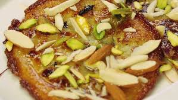

1. First, take maida, sooji, milk, sugar, and mashed banana in a large mixing bowl. Mix all the ingredients slowly while adding milk little by little to prepare a smooth flowing batter without lumps. The banana gives softness and natural sweetness to the malpuri while sooji adds a slight crispy texture after frying. Allow the batter to rest for some time so all the ingredients combine properly and the texture becomes rich and smooth.
2. While the batter is resting, prepare sugar syrup in another pan by boiling sugar and water together while stirring continuously. Add cardamom powder, saffron strands, and a few drops of rose essence to improve the aroma and flavor. Continue boiling until the syrup becomes slightly sticky and aromatic. Keep the syrup warm because warm malpuris absorb the syrup more effectively after frying.
3. Heat oil or ghee in a wide flat pan on medium flame. Stir the prepared batter gently before frying so the ingredients mix evenly. Take a small ladle of batter and pour it slowly into the hot oil in a circular shape. The batter spreads naturally and forms soft round malpuris while frying.
4. Fry the malpuris slowly on low to medium flame while turning them gently on both sides. Cook until they become golden brown, slightly crispy on the edges, and soft in the center. Proper frying is important because it gives the dessert its rich texture and delicious traditional taste.
5. Once the malpuris are fried perfectly, remove them carefully from the oil and immediately place them into the warm sugar syrup. Let them soak for a few seconds so they absorb the sweetness evenly while still maintaining their soft texture and rich flavor.
6. Remove the soaked malpuris carefully from the syrup and place them on a serving plate. Garnish them with chopped pistachios, almonds, saffron strands, and a little rabri if desired. The garnish makes the dessert look rich, colorful, and festive.
7. Allow the flavors to settle for a few minutes before serving. The sweetness of the syrup, aroma of cardamom, and softness of the malpuri blend together beautifully to create a delicious traditional dessert loved during celebrations and festivals.
8. Finally, serve the special malpuri hot or warm during festivals, family functions, and special occasions. Its soft texture, rich sweetness, crispy edges, and delicious aroma make malpuri one of the most loved traditional Indian sweets enjoyed by people of all ages.
